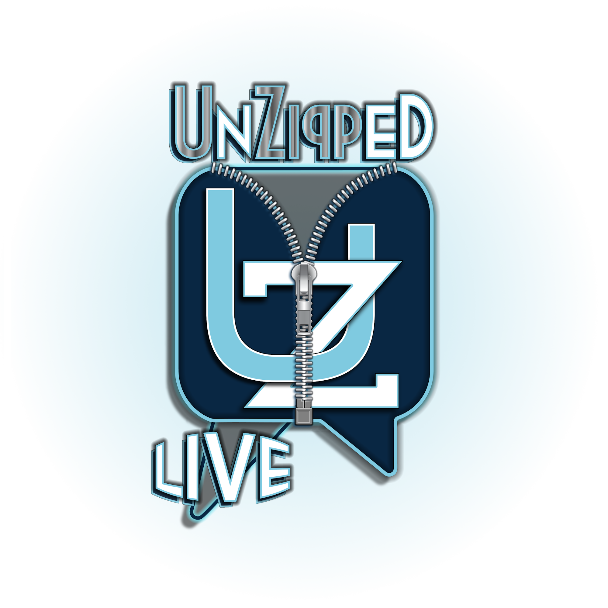
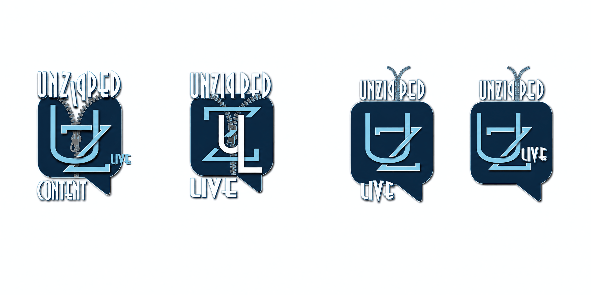
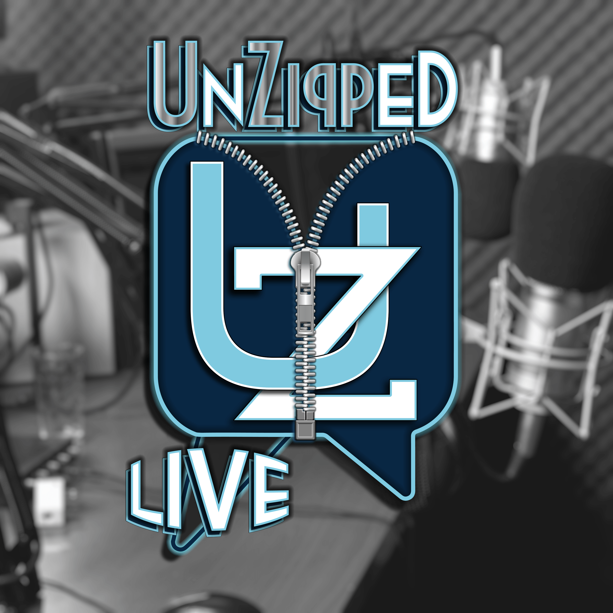
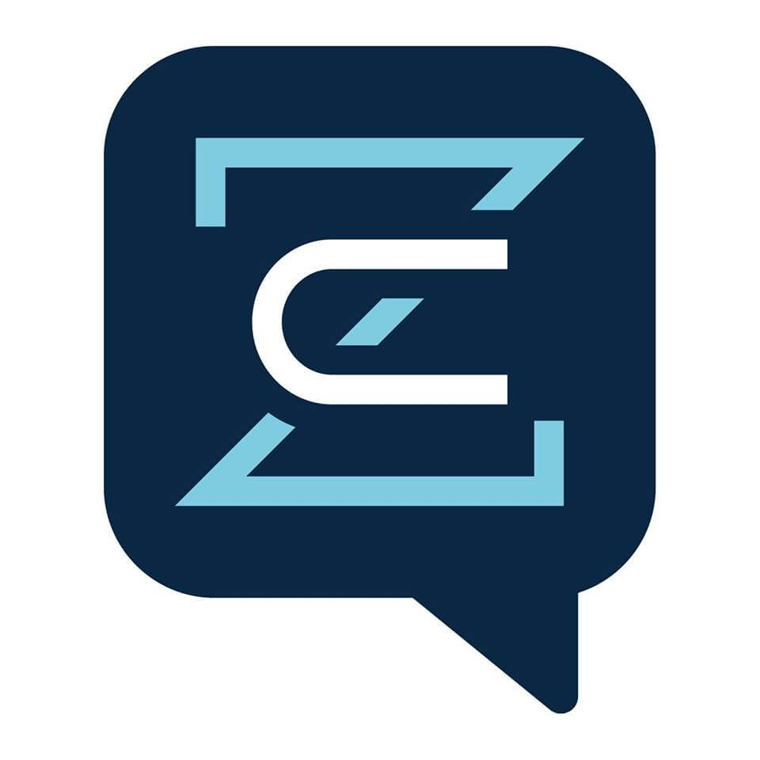

When a weird metaphor becomes a perfect brand.
The client was a seasoned business community admin with deep connections inside one of the internet's most elite entrepreneurial circles — a $5,000/year, application-only mastermind of over 3,000 serious business owners.
She had a vision for a podcast unlike anything in the business space. No surface-level success stories. No highlight reels. She wanted raw, transparent, one-on-one conversations that pulled back the curtain on how high-performing, internet-leveraged business owners actually think.
The audience existed. The connections were in place. She needed a brand that could hold all of that weight — one that communicated depth, openness, and authenticity before a single word was spoken.
Before Unzipped Live existed, I was a member of that same mastermind — granted access in exchange for past graphics work I'd done for the group's founder. True to form, I immediately started creating value for the community. Not because anyone asked. Just because that's how I operate.
I designed a series of branded profile picture overlays for the group members. Free to download. Came with a YouTube tutorial I created showing exactly how to use them. The response was immediate — members across the community swapped out their profile pictures, repping the brand across every social platform.
The client was one of the group's admins. She watched the whole thing unfold from the inside — not just the designs themselves, but the initiative, the generosity, and the teaching instinct behind them. When she reached out about her podcast, it wasn't a cold inquiry. It was a hire based on demonstrated character as much as demonstrated skill.
Early in our conversations, the client described what she wanted the podcast to feel like. She said — and I'm paraphrasing here because the original phrasing was wonderfully strange — that she wanted it to feel like "we had unzipped the curtain to open the window."
Curtains don't have zippers. Windows don't get unzipped. By any technical measure, it was a mixed metaphor. But the feeling inside it was crystal clear — pulling something open that's normally kept closed. Revealing what's behind it. Letting people in.
Unzipping a conversation. Unzipping a persona. Unzipping the carefully curated version of success that most people present to the world. The name carried layers of meaning without requiring any explanation. Unzipped Live was locked in within minutes of that conversation. Some names just land.
Rather than presenting a single concept and asking for feedback, I developed four distinct logo directions simultaneously and presented them together as a design exploration sheet. Each explored a different approach to the same core challenge — how do you make a lettermark that looks like what the brand means?

The final logo was the result of a client who could articulate what was working and why — and a designer who had created the conditions for that clarity by presenting real options to react to. Nothing in the final mark is decorative. Nothing is arbitrary.

The shape, the lettermark, the zipper, the typography — all of it saying the same thing. A logo that works as a social media avatar, a podcast thumbnail, a watermark, a t-shirt graphic. Built to live everywhere a modern media brand needs to live.
A strong brand identity doesn't stop at a single logo. From the Unzipped Live system we developed Zippy Content — a sub-brand built for the content creation and distribution side of the podcast ecosystem.
Same speech bubble container. Same navy and sky blue palette. Same geometric design language. But stripped back to a cleaner, more minimal mark appropriate for a production context rather than a public-facing media brand.
The visual relationship between the two is immediate and intentional. A viewer encountering Zippy Content after seeing Unzipped Live would know they were connected — without being told. That's what a real brand system does. Recognition without explanation.

Unzipped Live wasn't a logo project. It was a brand architecture project — requiring conceptual thinking, naming instinct, design execution, and system-level planning all at once.